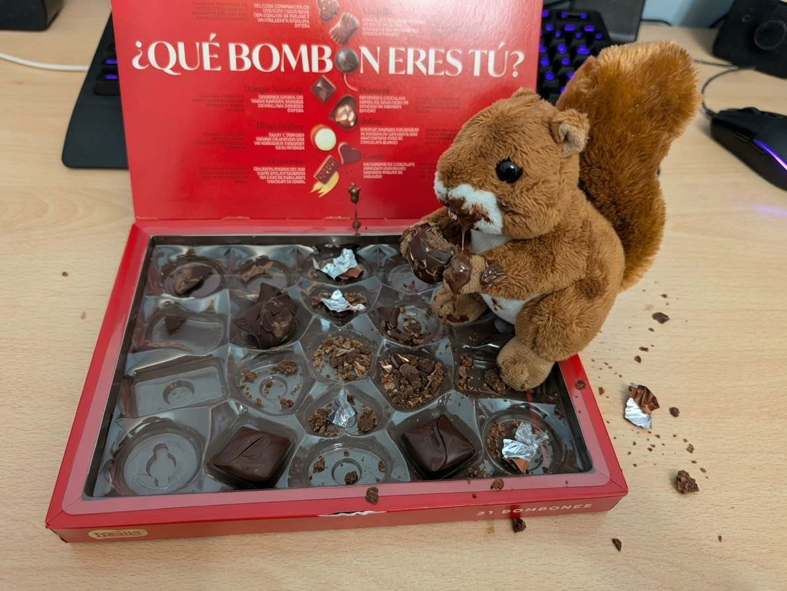
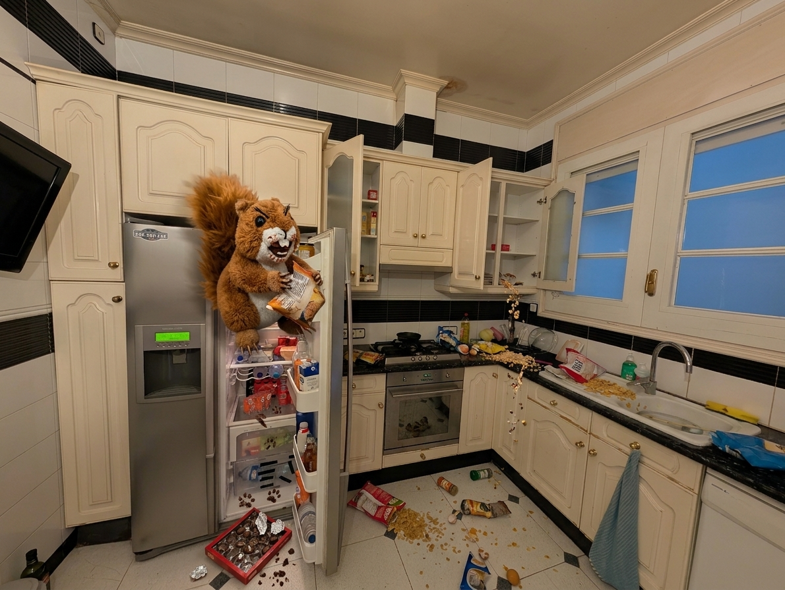
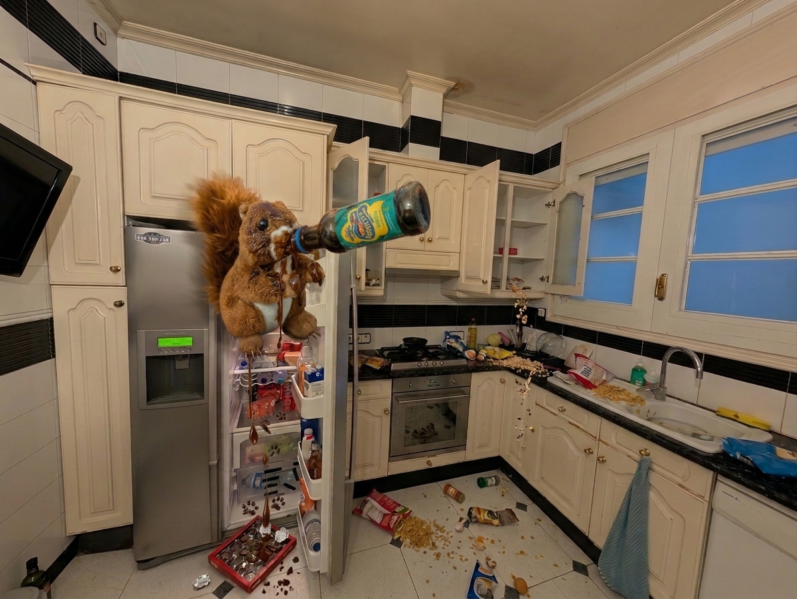
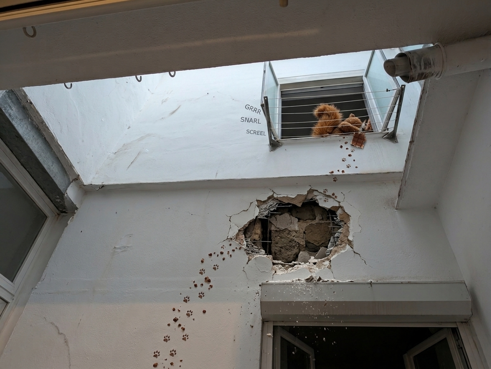
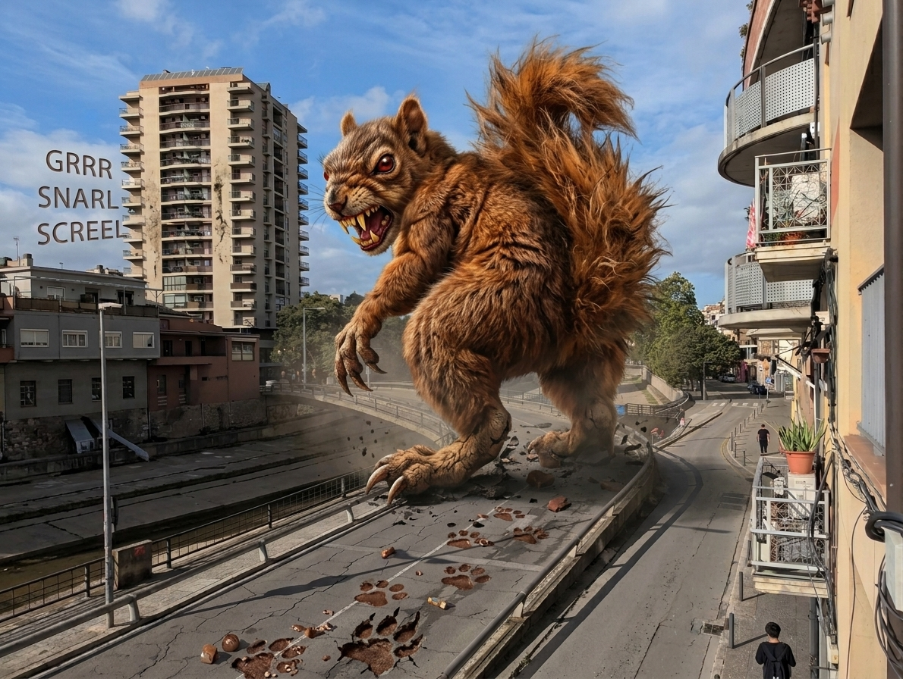
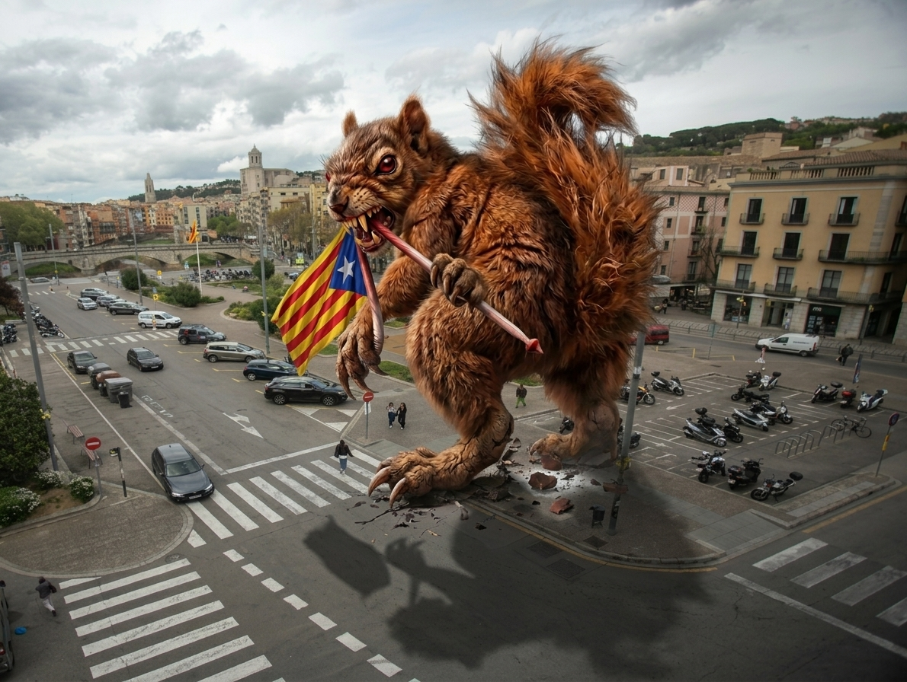

Cada vez queda menos, Cyn
No te sientas mal, también puedes verlo así:
segundos
O así:
minutos
O también...
horas
O...
días
Mientras esperas, aprovecha para leer mis respuestas:
¿Qué tarta te gusta? A mí me gusta muchísimo la tarta Sacher, solo.. para que lo sepas, por si acaso xD
Pues el día de mi cumple pedimos un coulant que estaba buenísimo... Y en la panadería del lado de casa de mis padres tenían unas Saras que estaban buenísimas (pero cerraron 😭). En mis últimos cumples...

¿Eres más de dulce o de salado?
Ambos (respuesta fácil xd). Me gustan las cosas dulces pero también la comida con sal. Diré salado porque hay muchos platos que hago (salados, de comida normal), y luego hay muchos pasteles, y como ya sabes, no soy de pasteles...


¿Playa o montaña? Sé que te molan las dos, pero vas a tener que elegir, amigo.
LAS DOS. Es más, estoy empezando un proyecto para llevar la montaña a la playa. Voy a traer un camión lleno de rocas volcánicas para echarlas al mar. Como flotan, van a tapar la playa y podremos coger la mochila y botas y subir una nueva montaña flotante...
¿Has tenido mascotas alguna vez?
De pequeño, hasta los 8 o 10 años, tuve una perra llamada Espurna (Chispa en castellano, suena mucho mejor). La había atropellado un coche hacía años y estaba ciega de un ojo. Cuando mi madre se la regaló hace muchos años, él no la quería. Al final, cuando la durm...
¿Qué pregunta le harías a tu yo de 60 años?
Cuál es la edad de jubilación? xd
También le preguntaría si he conseguido vivir feliz, y sin lamentar nada. De hecho estoy pensando en una canción que habla de esto. Escúchala, está en catalán, pero seguro que la podrás entender. Iba a ponerte algunas partes de la letra pero no consigo decidir cuál poner, así que te la pongo toda (la letra). Escúchala ahora, que te conozco y esta pregunta te la vas a saltar... Y siempre está bien tomarse un tiempo para
Quan sigui vell de què em penediré?
No vull que sigui d’haver fallat als meus
Quan sigui vell i pobre en temps
espero ser ric en tot el demés
Menys en diners
Qui es fa una tomba tota d’or
no ha entès res
Un Ozymandias més de pols al desert
una altra empremta esborrada pel vent
Quan siguis vell què voldràs haver fet?
Lamentaràs no haver estat més valent?
Quan siguis vell
digue’m a qui enyoraràs més
als qui has perdut per ser més lliure
o als qui has traït per ser-ho menys?
Digue’m què tens, digue’m qui ets
Algú ha abraçat els teus defectes sense més?
T’han estimat sense voler-te canviar gens?
Digue’m quant t’ha tocat lluitar per ser qui ets
Quan siguem vells
serem nosaltres contra el vent
torrats a un poble de Galícia
mentre el món es destrueix
I abarrotats
els cementiris i els cendrers
ens fotrem de cap al mar
i que se'ns mengi els ulls un peix
Total, i què?
si cap passat vindrà a salvar-nos de morir
que no t’emportes ni un record, però això sí:
la mort arriba molt més suau quan vius feliç
También le preguntaría si he conseguido vivir feliz, y sin lamentar nada. De hecho estoy pensando en una canción que habla de esto. Escúchala, está en catalán, pero seguro que la podrás entender. Iba a ponerte algunas partes de la letra pero no consigo decidir cuál poner, así que te la pongo toda (la letra). Escúchala ahora, que te conozco y esta pregunta te la vas a saltar... Y siempre está bien tomarse un tiempo para
No vull que sigui d’haver fallat als meus
Quan sigui vell i pobre en temps
espero ser ric en tot el demés
Menys en diners
Qui es fa una tomba tota d’or
no ha entès res
Un Ozymandias més de pols al desert
una altra empremta esborrada pel vent
Quan siguis vell què voldràs haver fet?
Lamentaràs no haver estat més valent?
Quan siguis vell
digue’m a qui enyoraràs més
als qui has perdut per ser més lliure
o als qui has traït per ser-ho menys?
Digue’m què tens, digue’m qui ets
Algú ha abraçat els teus defectes sense més?
T’han estimat sense voler-te canviar gens?
Digue’m quant t’ha tocat lluitar per ser qui ets
Quan siguem vells
serem nosaltres contra el vent
torrats a un poble de Galícia
mentre el món es destrueix
I abarrotats
els cementiris i els cendrers
ens fotrem de cap al mar
i que se'ns mengi els ulls un peix
Total, i què?
si cap passat vindrà a salvar-nos de morir
que no t’emportes ni un record, però això sí:
la mort arriba molt més suau quan vius feliç
Te he dicho que escuches la canción.
No me hagas venir 😡
¿A quién llamarías primero si te pasara algo muy bueno? ¿Y algo muy malo? ¿Llamarías o mandarías un mensaje?
A ti, obvio xd si te lo cuento todo... Y algo muy malo? Pues quizá a nadie, o a ti, para desahogarme contigo jajajaj Te mandaría un mensaje de voz y cuando no te lo escucharas, me pasaría 20 minutos dándole la chapa al voz a texto del teclado del móvil para escribírtelo todo en texto. Perdón a veces soy muy pesao xD
No estoy intentando entrar en ninguna cuenta tuya sin la contraseña.
Yo tampoco estoy haciendo nada ilegal ni inmoral, ni nada prohibido por los Convenios de Ginebra. Hoy.
¿Te unirías conmigo al pastafarismo?
¡Ahoy, amiga! Que le den al 19 de septiembre, habría que hablar cada día así! ¡Arrr!
Te iba a mandar foto pero no tengo ningún colador.
Te iba a mandar foto pero no tengo ningún colador.
[Pregunta número 10]
[Respuesta número 10]
¿Crees que estaría bien darles chocolate a las ardillas?
Por recomendación de mi abogado en la causa contra el maltrato animal, no voy a responder a esa pregunta.
Esto.... tuve un pequeño problema con la ardilla...






